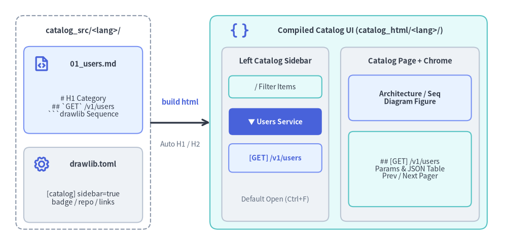
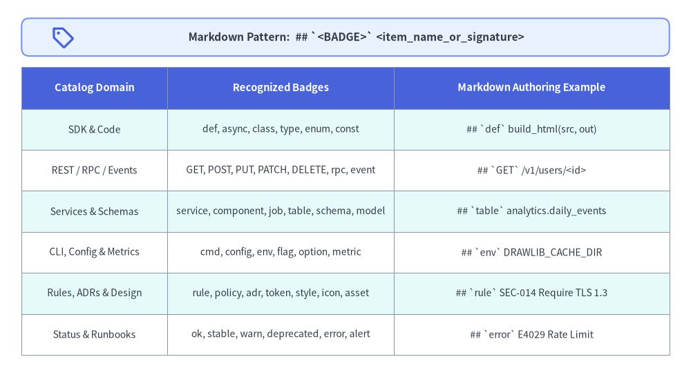

Catalog Project Guide (drawlib init project catalog)
The catalog starter template builds a dedicated, two-column Illustrated Catalog & Reference website (1 Markdown = 1 HTML Page) for API/SDK references, CLI/config dictionaries, database/event schemas, service directories, policy/lint rulebooks, and error runbooks—auto-extracting each file's # H1 into a sidebar category and its ## H2 headings into badged item links with / quick filtering and embedded Drawlib diagrams:

Source Code
from drawlib.canvas import save, setup
from drawlib.icons import phosphor
from drawlib.lines import line
from drawlib.shapes import rectangle
from drawlib.styles import Styles
from drawlib.text import text
setup(width=128, height=62)
# Left: Source directory container (No navbar.md needed)
rectangle((21, 31), width=34, height=54, style=Styles.MutedDashed.patch(shape_r=2.0))
text((21, 54.2), "catalog_src/<lang>/", style=Styles.DarkBold.patch(text_size=10.8))
rectangle((21, 39.2), width=30, height=22, style=Styles.PrimaryNeutral.patch(shape_r=1.5))
phosphor.file_code((10.5, 45.8), width=4.4, style=Styles.PrimaryBold)
text((23.5, 45.8), "01_users.md", style=Styles.DarkBold.patch(text_size=10.5))
text((21, 35.0), "# H1 Category\n## `GET` /v1/users\n```drawlib Sequence", style=Styles.Dark.patch(text_size=10.0))
rectangle((21, 15.2), width=30, height=19, style=Styles.Neutral.patch(shape_r=1.5))
phosphor.gear((10.5, 20.5), width=4.4, style=Styles.PrimaryBold)
text((23.5, 20.5), "drawlib.toml", style=Styles.DarkBold.patch(text_size=10.5))
text((21, 11.8), "[catalog] sidebar=true\nbadge / repo / links", style=Styles.Dark.patch(text_size=10.0))
# Middle: Compiler step
line((38, 31), (53, 31), arrow_head="->", style=Styles.DarkBold)
text((45.5, 36.2), "build html", style=Styles.PrimaryBold.patch(text_size=10.5))
text((45.5, 25.5), "Auto H1 / H2", style=Styles.Muted.patch(text_size=10.0))
# Right: Compiled Two-Column Catalog UI (catalog_html/<lang>/)
rectangle((88, 31), width=70, height=54, style=Styles.SecondaryNeutral.patch(shape_r=2.0))
phosphor.brackets_curly((60.5, 54.2), width=4.6, style=Styles.PrimaryBold)
text((91.0, 54.2), "Compiled Catalog UI (catalog_html/<lang>/)", style=Styles.DarkBold.patch(text_size=10.8))
# Left Sticky Sidebar (Single divider + Default Open <details>)
rectangle((69.5, 28.0), width=27, height=44, style=Styles.Neutral.patch(shape_r=1.5))
text((69.5, 46.5), "Left Catalog Sidebar", style=Styles.DarkBold.patch(text_size=10.5))
rectangle(
(69.5, 40.0),
width=23.5,
height=5.6,
style=Styles.SecondaryNeutral.patch(shape_r=1.0),
text="/ Filter Items",
text_style=Styles.Dark.patch(text_size=10.0),
)
rectangle(
(69.5, 31.2),
width=23.5,
height=6.8,
style=Styles.PrimaryFlat.patch(shape_r=1.0),
text="▼ Users Service",
text_style=Styles.WhiteBold.patch(text_size=10.0),
)
rectangle(
(69.5, 22.0),
width=23.5,
height=7.2,
style=Styles.PrimaryNeutral.patch(shape_r=1.0),
text="[GET] /v1/users",
text_style=Styles.PrimaryBold.patch(text_size=10.0),
)
text((69.5, 11.5), "Default Open (Ctrl+F)", style=Styles.Muted.patch(text_size=9.8))
# Right Main Content Pane
rectangle((103.5, 28.0), width=35, height=44, style=Styles.Neutral.patch(shape_r=1.5))
text((103.5, 46.5), "Catalog Page + Chrome", style=Styles.DarkBold.patch(text_size=10.5))
rectangle(
(103.5, 37.2),
width=31,
height=11.5,
style=Styles.PrimaryNeutral.patch(shape_r=1.2),
text="Architecture / Seq\nDiagram Figure",
text_style=Styles.DarkBold.patch(text_size=10.0),
)
rectangle(
(103.5, 19.2),
width=31,
height=19.0,
style=Styles.SecondaryNeutral.patch(shape_r=1.2),
text="## [GET] /v1/users\nParams & JSON Table\nPrev / Next Pager",
text_style=Styles.Dark.patch(text_size=10.0),
)
save()
1. When to Use catalog vs. site (Use Cases)
Mixing narrative tutorials with hundreds of structured items—SDK functions, REST endpoints, CLI flags, database tables, microservices, or error codes—inside a single navbar.md sidebar makes both hard to scan. Drawlib's catalog archetype separates dense item catalogs and technical references into a dedicated lookup experience while preserving full Drawlib diagram embedding:
| Capability | site Project (docs_src/) |
catalog Project (catalog_src/) |
|---|---|---|
| Primary Goal | Narrative guides, tutorials, onboarding & architecture portals | Structured item catalogs, technical references & operational dictionaries |
| Sidebar Source | Manual <lang>/navbar.md curated by authors |
Zero navbar.md — auto-extracted from each .md file's # H1 & ## H2 |
| Left-Pane Depth | Page links grouped under ## Section headings |
Expandable <details> per # H1 category + ## H2 #slug item anchors |
| Semantic Badges | Standard prose headings | Automatic color-coded badges (def, GET, cmd, service, table, rule, error, ...) |
| In-Browser Search | Page-level navigation | Default-expanded categories (Ctrl+F friendly) + instant / client-side filter |
Representative catalog Scenarios:
- API & SDK References: Python / TypeScript / Go module indices, REST / GraphQL / gRPC endpoint specs, and sequence flows.
- CLI, Config & Flag Dictionaries: Subcommands (
cmd), environment variables (env), feature flags (flag), and TOML/YAML keys (config). - Data, Event & Schema Catalogs: Relational/BigQuery tables (
table), views (view), Kafka/PubSub events (event), and ER diagrams. - Microservice & Platform Directories: Internal developer portals listing services (
service), pipelines (pipeline), dependencies, and SLOs. - Lint Rules, Security Policies & ADRs: Rule IDs (
rule), policy checks (policy), and architecture decision records (adr). - Error Catalogs & SRE Runbooks: Error codes (
error), alert playbooks (alert), and recovery decision flowcharts. - Design Systems & Asset Catalogs: Color/style tokens (
token,style), UI components (component), and icon/template libraries (icon,asset).
2. Scaffolding & Directory Layout
Initialize a single-locale or multi-locale catalog project with drawlib init project catalog:
# Default English catalog project (creates catalog_src/en/):
uv run drawlib init project catalog
# Custom target name (e.g. api_src/{en,ja}/ or services_src/{en,ja}/) + Google theme:
uv run drawlib init project catalog api -l en,ja -s google
# Compile HTML, GitHub Markdown, and standalone images:
./catalog_src/build.sh
# Validate every internal page & anchor link headlessly:
uv run drawlib serve catalog_html/ --check
Scaffolded directory layout:
catalog_src/
├── drawlib.toml # Project manifest (type = "catalog", [i18n], [catalog], optional [seo])
├── styles.py # Global Drawlib diagram palette & typography overrides
├── utils.py # Reusable Python diagram helpers
├── style.css # Responsive 2-column catalog stylesheet (Light/Dark)
├── template.html # Jinja2 catalog layout (filter, scroll-spy, header links, pager)
├── _assets/ # Static logos & favicon.png (mirrored to catalog_html/_assets/)
├── en/ # Locale Markdown pages (sorted naturally: 00_, 01_, 02_, ...)
│ ├── 00_overview.md # Topology overview (ArchitectureDiagram) & shared conventions
│ ├── 01_users.md # Endpoints or service entries (`GET`/`POST`/`DELETE`) & SequenceDiagram
│ └── 02_models.md # Schemas, classes, or config entries (`class`/`def`) & ERDiagram
├── build.sh # Master build script (HTML + Markdown + Images)
├── build_html.sh # Fast HTML-only rebuild -> catalog_html/
├── build_markdown.sh # GitHub-Flavored Markdown export -> catalog_markdown/
├── build_image.sh # Standalone PNG extraction -> catalog_images/
└── serve.sh # Local preview HTTP server
Note: Like
site, multi-pagecatalogprojects compile tohtml,markdown, andimagetargets (drawlib build pdfanddrawlib build docxtarget lineardocorslideprojects).
3. Heading Mapping & Semantic Badges (# H1 / ## H2)
Every Markdown file under catalog_src/<lang>/ maps 1:1 to an HTML page and populates the left navigation tree automatically:
# H1(Category / Domain Header): Becomes the<details class="catalog-nav-group">summary title in the left pane and the<h1 class="catalog-page-title">header on the page. Dotted identifiers (such as# drawlib.shapesor# billing.v1) automatically render in monospace font.## H2(Catalog Item / Symbol Sub-list): Prefixing an## H2heading with a leading inline-code token`BADGE`renders a semantic pill badge in both the left sidebar and the main content heading, plus a deterministic#slugpermalink anchor.### H3/#### H4(Detail Sub-sections): Receive deterministicid="..."anchors in the page body (e.g.,### Parameters,### Remediation Steps) without cluttering the left sidebar.

Source Code
from drawlib.canvas import save, setup
from drawlib.icons import phosphor
from drawlib.shapes import rectangle
from drawlib.smartarts import Table
from drawlib.styles import Colors, Styles
from drawlib.text import text
setup(width=128, height=70)
rectangle((64, 63.0), width=120, height=7.0, style=Styles.PrimaryNeutral.patch(shape_r=1.5))
phosphor.tag((11.5, 63.0), width=4.4, style=Styles.PrimaryBold)
text(
(66.0, 63.0),
"Markdown Pattern: ## `<BADGE>` <item_name_or_signature>",
style=Styles.DarkBold.patch(text_size=11.2),
)
tbl = Table(
cell_style=Styles.White,
text_style=Styles.Dark.patch(text_size=10.0),
header_cell_style=Styles.PrimaryFlat,
header_text_style=Styles.WhiteBold.patch(text_size=10.6),
border_style=Styles.MutedThin,
has_header=True,
)
tbl.set_style_cell_evenodd(
even_color=Colors.White,
even_text_style=Styles.Dark.patch(text_size=10.0),
odd_color=Styles.SecondaryNeutral.shape_fill_color or Colors.White,
odd_text_style=Styles.Dark.patch(text_size=10.0),
)
tbl.set_style_cell_header(
background_color=Styles.PrimaryFlat.shape_fill_color or Colors.Primary,
text_style=Styles.WhiteBold.patch(text_size=10.6),
)
tbl.draw_flexible(
xy=(4, 57.5),
column_widths=[27.0, 42.0, 51.0],
row_heights=[7.8, 7.6, 7.6, 7.6, 7.6, 7.6, 7.6],
data=[
["Catalog Domain", "Recognized Badges", "Markdown Authoring Example"],
["SDK & Code", "def, async, class, type, enum, const", "## `def` build_html(src, out)"],
["REST / RPC / Events", "GET, POST, PUT, PATCH, DELETE, rpc, event", "## `GET` /v1/users/<id>"],
["Services & Schemas", "service, component, job, table, schema, model", "## `table` analytics.daily_events"],
["CLI, Config & Metrics", "cmd, config, env, flag, option, metric", "## `env` DRAWLIB_CACHE_DIR"],
["Rules, ADRs & Design", "rule, policy, adr, token, style, icon, asset", "## `rule` SEC-014 Require TLS 1.3"],
["Status & Runbooks", "ok, stable, warn, deprecated, error, alert", "## `error` E4029 Rate Limit"],
],
)
save()
Markdown Authoring Example (01_users.md):
# Users Service
Provision, query, and revoke workspace user accounts over HTTPS.
```drawlib align=center code=fold file=users_provisioning_sequence.png caption="POST /v1/users Provisioning Sequence"
from drawlib.canvas import save, setup
from drawlib.diagrams.sequence import Participant, PhosphorIcon, SequenceDiagram
from drawlib.styles import Styles
setup(width=120, height=62)
sd = SequenceDiagram(
node_style=Styles.Dark,
node_text_style=Styles.DarkBold.patch(text_size=10.5),
edge_style=Styles.Dark.patch(line_width=1.4),
edge_text_style=Styles.Dark.patch(text_size=10.0),
node_card_style=Styles.Neutral,
col_width=34.0,
step_y=7.5,
)
client = sd.add(Participant("SDK Client", icon=PhosphorIcon.LAPTOP, width=22, card_style=Styles.PrimaryNeutral))
api = sd.add(
Participant(
"Users API",
icon=PhosphorIcon.SHIELD_CHECK,
width=22,
style=Styles.White,
text_style=Styles.WhiteBold.patch(text_size=10.5),
card_style=Styles.PrimaryFlat,
)
)
db = sd.add(Participant("PostgreSQL", icon=PhosphorIcon.DATABASE, width=22, card_style=Styles.Neutral))
client.request(api, "POST /v1/users")
api.request(db, "INSERT INTO users")
db.reply(api, "201 Created")
api.reply(client, "User JSON")
sd.draw(xy=(60, 31), align="center")
save()
```
## `GET` /v1/users/<id>
Retrieve a single user profile by unique identifier `<id>`.
| Parameter | Location | Type | Description |
| :--- | :--- | :--- | :--- |
| `id` | `path` | `string` | Unique user ID (`usr_...`). |
## `POST` /v1/users
Create a new user account and dispatch an invitation token.
Angle-Bracket Safety (
<id>,<T>): Route placeholders such as/v1/users/<id>and generic type parameters such asResult<T>are preserved verbatim as visible escaped text in both the sidebar and<h2>headings without being stripped as HTML tags.
4. Configuring [catalog] in drawlib.toml
Customize sidebar expansion defaults, top-bar breadcrumb labels, version/status pills, source repository links, and top-right navigation links directly in catalog_src/drawlib.toml without editing template.html:
[project]
name = "platform_catalog"
type = "catalog"
title = "Platform Catalog"
description = "Internal services, REST APIs, event schemas, and SRE runbooks."
style = "google"
[i18n]
default_lang = "en"
langs = ["en", "ja"]
[catalog]
# Expand all sidebar categories by default so browser Ctrl+F / Cmd+F finds every item immediately:
sidebar_expanded = true
# Optional top-bar root breadcrumb label (defaults to "Catalog" / "カタログ" when omitted):
breadcrumb_root = { en = "Platform Catalog", ja = "基盤カタログ" }
# Optional version/status pill rendered in the sidebar subbar (plain string or per-locale table):
badge_text = { en = "v2.4 · Production", ja = "v2.4 · 本番稼働" }
badge_url = "00_overview.html"
# Optional GitHub / GitLab source repository icon in the sidebar subbar (http:// or https://):
repo_url = "https://github.com/example/platform-catalog"
# Optional navigation links rendered in the top-right header bar (plain or localized labels):
header_links = [
{ label = { en = "Architecture Guide", ja = "設計ガイド" }, url = "https://docs.example.com" },
{ label = "Data Schemas", url = "02_models.html" },
]
[catalog] Reference Table:
| Key | Type | Default | Behavior |
|---|---|---|---|
sidebar_expanded |
bool |
true |
When true (default and omitted fallback), all category <details> render open so native browser find (Ctrl+F / Cmd+F) matches every item across the catalog. When false, inactive categories start collapsed while the current page's category remains open. |
breadcrumb_root |
str | dict[lang, str] |
"Catalog" (localized) |
Customizes the root breadcrumb label in the top bar (e.g., "API Reference", "Service Catalog", "Error Dictionary"). |
badge_text |
str | dict[lang, str] |
None |
Renders a version/status pill below the brand header. When both badge_text and repo_url are omitted, the subbar hides cleanly while preserving a single crisp horizontal divider beneath the brand title. |
badge_url |
str |
None |
Optional http(s):// or locale-relative link target when clicking the version pill. |
repo_url |
str |
None |
Optional http:// or https:// repository URL rendered as a source icon next to the badge. |
header_links |
list[{label, url}] |
[] |
Links displayed in the top-right bar alongside the multi-locale switcher (http(s):// links open in a new tab with an ↗ indicator; relative links rebase automatically across nested subdirectories). |